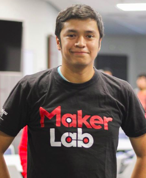

Amiguito. Quién eres?
Amiguito. Quién eres?

Formación:
- Ingeniería Mecánica - Universidad Nacional de Ingeniería - Aproximamente 2017-1
- Programacion: Autodidacta
Experiencia Laboral:
- Trabajos Freelancer con Symfony (framework php) - 2012
- Organización de Eventos Nacionales e Internacionales ASME
- Webmaster y Program Chair en Junta Estudiantil LatinAmerica ASME
- Trabajos Freelancer Elixir y Phoenix para Termochilca y Enel
- Chamba con Eduardo:
Secret Project Makerlab ♥
Objetivos del taller
Objetivos del taller
- Los objetivos paso a paso que completaremos:
- Comprender las ventajas del uso de la programación funcional y en especial Elixir.
- Programar de manera convencional en Elixir.
- Trabajar con la arquitectura basica de proyectos elixir.
- Programar de manera concurrente en Elixir (Modelo actor, OTP, GenServer, Supervisors)
- Comprender la arquitectura basica de proyectos Phoenix.
- Comprender como Phoenix adapta el patron Modelo, Vista, Controlador.
- Programar un CRUD basico en Phoenix (Formularios)
- Programar un API basico en Phoenix (Http Request Methods)
- Autentificación y Autorización
- Deployment
Introducción
Introducción
Por qué Elixir?
Por qué Elixir?
Conectando todo - Millones de Conexiones sin caer por mantenimiento o hardware updates. Elixir es perfecto para soportar millones de conexiones.
De donde proviene Elixir?
De donde proviene Elixir?

De donde proviene Erlang? 1980 aprox
De donde proviene Erlang? 1980 aprox

Controlar conmutaciones telefonicas
Controlar conmutaciones telefonicas
一Una red telefonica siempre debera operar independientemente del numero simultaneo de llamadas, bugs inesperados, o llevandose actualizaciones de hardware y sofware.
– Saša Jurić, Elixir in Action
Metas:
Concurrente: Procesos de un computo se hacen simultaneamente.Tolerante a fallos: Recuperar se bugs automaticamente.Alta Disponibilidad: Que no se caiga todo el sistema a menos que seas claro o movistar. Ellos con que trabajaran.
Caracteristica de Erlang
Caracteristica de Erlang
- Compilado: El codigo que escribes se convierte en otra forma antes de ejecutarse en el cpu (Evita errores y optimiza)
- Estados Inmutables: Una vez creado un elemento no se puede modificar.
- Funcional: Pensar en programación como transformaciones dentro de un proceso.
- Proceso es la basica abstraccion: Super sencillo, similar en dificultad en cuanto a crear objetos en otros lenguajes.
- Los procesos no comparten memoria y se comunican solo por mensajes (Modelo Actor)
- Monitoreo de procesos con reinicio automatico.
- Computación distribuida: No importa si los procesos estan en una misma maquina, solo importa que se comuniquen.
Confiabilidad: 99.9999999% equivalente a 1 segundo de inactividad cada 32 años.
Implementación de Erlang
Implementación de Erlang
+---------------------------------------+
| Codigo Erlang | <--- Codigo desarrollado
+---------------------------------------+
|
Erlang Compiler / HiPE
|
+---------------------------------------+
| .beam Bytecode |
+---------------------------------------+
|
BEAM Virtual Machine <--- Interpreta bytecode
|
+---------------------------------------+
| Codigo Nativo | <--- Codifica los procesos del CPU
+---------------------------------------+

一I loved everything I saw in Erlang, but I hated the things I didn't see.
– José Valim
Caracteristica que hacen destacar a Elixir sobre Erlang
Caracteristica que hacen destacar a Elixir sobre Erlang
Metaprogramación: En Erlang no se puede extender el lenguajes a otros dominios y dificil de limpiar el codigo repetitivo. En Elixir tenemos lasmacros
Polymorfismo: En Erlang si querias extender una libreria, la unica opción es hacerle un fork. En elixir tenemos losprotocolos.- Sintaxis amigable.
- Y por sobre todo, podemos llamar a librerias Erlange desde Elixir sin complicación.
Gracias ˊ・ω・ˋ